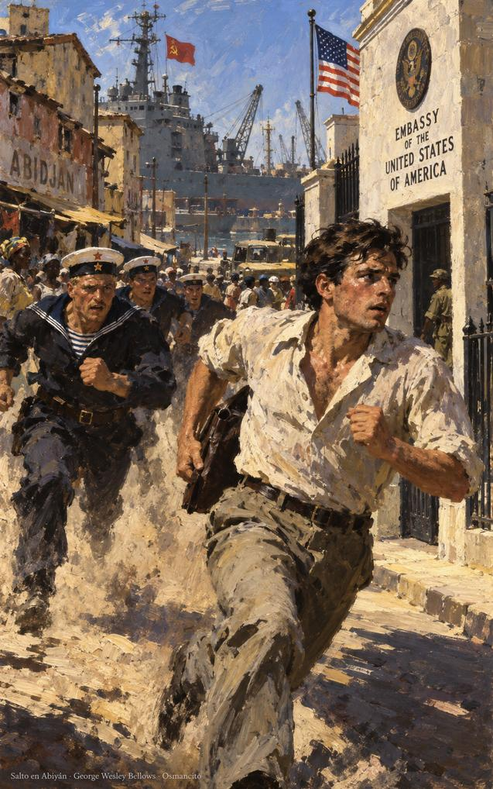

1 de noviembre de 2026
El nuevo vivir del trading
El nuevo vivir del trading (The New Trading for a Living) es un libro del psiquiatra y trader estadounidense Alexander Elder (un trader es quien compra y vende en los mercados buscando ganancias), publicado en 2014 por la editorial Wiley. Elder nació y se formó como médico en la Unión Soviética, y en 1974 desertó de un barco soviético y pidió asilo en Estados Unidos. El libro actualiza su Trading for a Living, de 1993, un éxito de ventas internacional. Hay edición en castellano de Ediciones Obelisco.
El libro enseña a operar en los mercados como un oficio serio: la psicología propia y la de la masa, el análisis de gráficos, los sistemas, el control del riesgo y el registro de cada operación. Se divide en un prólogo, una introducción que reúne los tres primeros capítulos y once partes que suman cincuenta y nueve capítulos en total; cierran una conclusión y las fuentes.
Introducción
Capítulo 1: El trading, la última frontera

Abre con una promesa: se puede ser libre, vivir y trabajar donde quiera y no responder ante nadie; esa es la vida de un trader exitoso. Muchos aspiran y pocos llegan: el juego es duro y pierden por ignorancia o indisciplina.
En el verano de 1976 conduje de Nueva York a California. Llevé unos libros de psiquiatría (era residente de primer año de psiquiatría), varias historias, y puse un ejemplar en rústica del How to Buy Stocks de Engel en el maletero de mi viejo Dodge. Poco sabía yo que un libro de bolsillo sobado, prestado por un amigo abogado, llegaría a su tiempo a cambiar el rumbo de mi vida. Ese amigo, dicho sea de paso, tenía un perfecto toque de oro al revés: toda inversión que tocaba se iba a pique. Pero esa es otra historia.
Párrafo 4
Un residente es un médico que se especializa ya trabajando en un hospital; Elder lo era de psiquiatría. El rey Midas de la leyenda convertía en oro cuanto tocaba; el amigo abogado tenía ese toque al revés. El libro del préstamo es How to Buy Stocks («Cómo comprar acciones»), la guía de iniciación a la bolsa que el estadounidense Louis Engel publicó por primera vez en 1953.
Devoró el libro: la idea de ganar dinero pensando. Médico de barco soviético, desertó en Abiyán y llegó a Nueva York con veinticinco dólares, sin saber qué era una acción. Ganó con su primera y tardó años en soltar la ilusión de que era fácil; la cuenta quebró repetidamente, hasta que entendió, desde la psiquiatría, que la clave estaba en su cabeza y no en un computador.
Sigue una advertencia: la esposa gorda de un amigo llevaba años a dieta y atracaba su cocina a escondidas; el placer inmediato podía más que la salud.
Solo puede tener éxito en el trading si lo toma como una empresa intelectual seria. El trading emocional es letal. Para ayudar a asegurar el éxito, practique una gestión defensiva del dinero. Un buen trader vigila su capital con el mismo cuidado con que un buzo profesional vigila su reserva de aire.
Párrafo 18
El capítulo cierra con su condición: el libro da el conocimiento y solo el lector pone la motivación. La gestión defensiva del dinero es el conjunto de reglas que limitan cuánto se arriesga en cada operación; el capítulo la compara con las normas de seguridad que sigue un atleta en los deportes de riesgo. El buzo que vigila su aire no es un miedoso: es el que puede seguir bajo el agua.
Los Originales
Esta sección reúne, en el idioma del libro y por orden de aparición, los párrafos que arriba van en castellano. El número de cada uno lleva de vuelta a su lugar.
Capítulo 1: El trading, la última frontera
Párrafo 4In the summer of 1976, I drove from New York to California. I took along a few books on psychiatry (I was a first-year psychiatric resident), several histories, and put a paperback copy of Engel's How to Buy Stocks into the trunk of my old Dodge. Little did I know that a dog-eared paperback, borrowed from a lawyer friend, would in due time change the course of my life. That friend, incidentally, had a perfect reverse golden touch—any investment he touched went under water. But that's another story.
Párrafo 18You can succeed in trading only if you handle it as a serious intellectual pursuit. Emotional trading is lethal. To help ensure success, practice defensive money management. A good trader watches his capital as carefully as a professional scuba diver watches his air supply.
© 2026 Osmancito